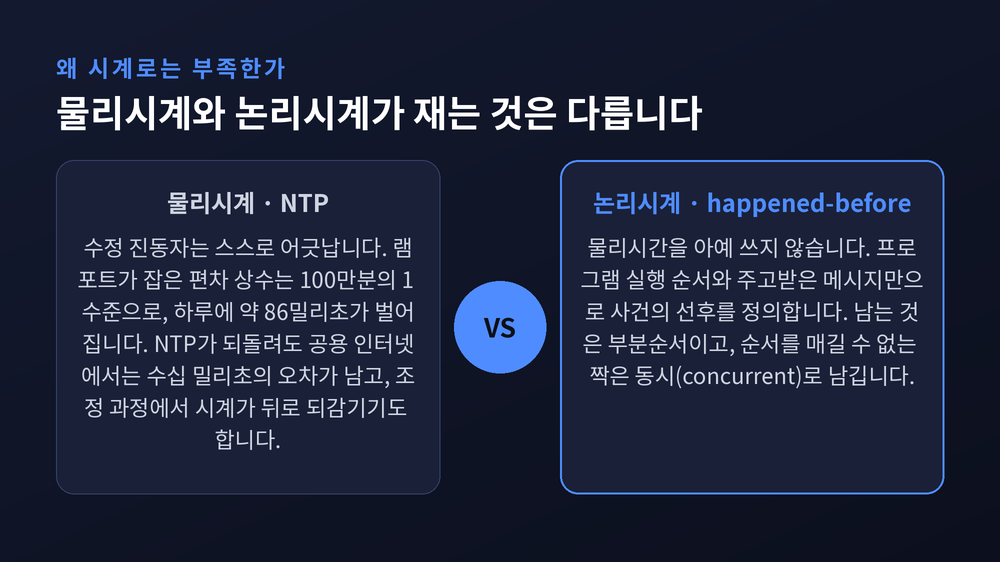
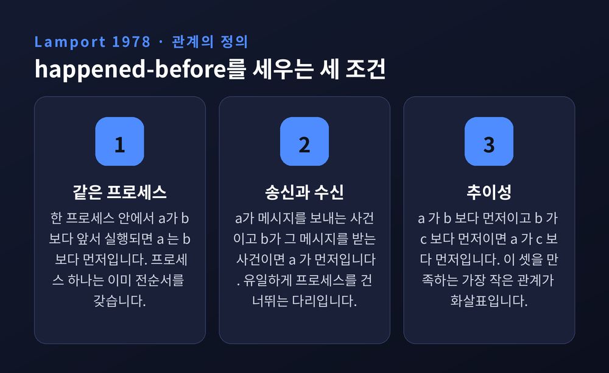
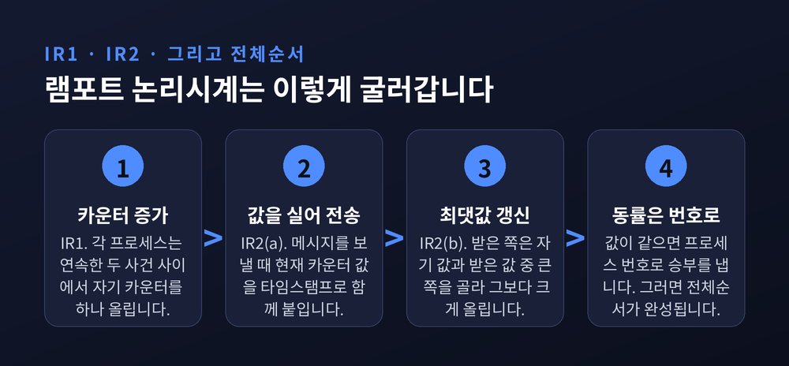
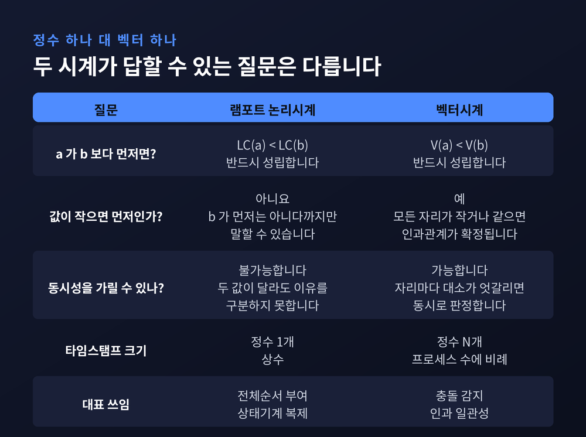
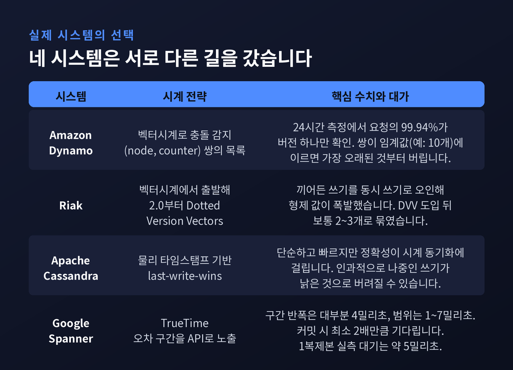

분산 시스템은 사건 순서를 어떻게 정하나 — 램포트 논리시계와 벡터시계
이번 글에서는 분산 시스템이 사건의 순서를 어떻게 정하는지 정리해 보겠습니다. 서버 시계를 아무리 잘 맞춰도 "이 요청이 저 요청보다 먼저"라고 단정할 수 없는 이유부터 시작합니다. 1978년 램포트가 내놓은 논리시계와, 그 한계를 메운 벡터시계까지 차례로 살펴보겠습니다.
시계를 맞춰도 순서를 알 수 없는 이유
두 서버가 각자 로그를 남깁니다. A는 10시 00분 05초, B는 10시 00분 03초. B가 먼저 일어난 일일까요.
답할 수 없습니다.
수정 진동자로 만든 컴퓨터 시계는 스스로 어긋납니다. 램포트는 원논문에서 이 편차 상수를 κ ≤ 10⁻⁶, 즉 100만분의 1 수준으로 잡았습니다. 하루 86,400초에 이 값을 곱하면 약 86밀리초입니다. 열흘이면 1초가 벌어지는 셈입니다. 이것이 드리프트(drift)입니다.
NTP는 이 어긋남을 주기적으로 되돌립니다. 하지만 0으로 만들지는 못합니다. 공용 인터넷에서는 수십 밀리초, 잘 관리된 사내망에서도 밀리초 안팎의 오차가 남습니다. 이것이 스큐(skew)입니다.
더 곤란한 점이 있습니다. NTP는 시계를 뒤로 되감기도 합니다. 램포트는 논문에서 물리시계를 다룰 때 "시계를 재설정할 때는 항상 앞으로만 돌리고 뒤로는 돌리지 않는다고 가정한다"고 못 박았습니다. 뒤로 돌리면 같은 프로세스 안에서조차 순서가 깨지기 때문입니다. 현실의 벽시계는 그 가정을 지키지 않습니다.
그래서 램포트는 아예 다른 길을 택했습니다. 물리시계를 쓰지 않고 '먼저'를 정의하기로 한 것입니다.

사건 사이의 '먼저'를 다시 정의하다
램포트는 분산 시스템을 이렇게 정의합니다. "메시지 전달 지연이 한 프로세스 안의 사건 간격에 비해 무시할 수 없이 큰 시스템."
그 위에서 화살표 기호 →(happened-before)를 세 조건으로 세웁니다.
- 같은 프로세스 안에서 a가 b보다 앞서 실행되면 a → b
- a가 메시지를 보내는 사건이고 b가 그 메시지를 받는 사건이면 a → b
- a → b 이고 b → c 이면 a → c
여기서 물리시간은 한 번도 등장하지 않습니다. 오직 프로그램 실행 순서와 메시지만 씁니다.
그리고 남는 것이 있습니다. a → b도 아니고 b → a도 아닌 두 사건. 램포트는 이를 동시(concurrent)라고 부릅니다.
여기서 오해하기 쉬운 대목이 하나 있습니다. 동시라는 말은 "같은 시각에 일어났다"는 뜻이 아닙니다. "서로에게 인과적으로 영향을 줄 수 없었다"는 뜻입니다. 원논문의 그림에서도 한쪽이 물리적으로 명백히 더 이른 시각에 그려져 있지만, 두 사건은 여전히 동시입니다. 메시지가 도착하기 전까지 상대가 무엇을 했는지 알 방법이 없기 때문입니다.
램포트 본인도 이 정의가 특수상대성이론의 시공간 형식과 닮았다는 점을 논문에 적어두었습니다.

램포트 논리시계, 두 줄의 구현 규칙
이제 각 사건에 숫자를 붙입니다. 조건은 하나입니다. a → b 이면 C(a) < C(b)여야 합니다. 논문은 이를 Clock Condition이라 부릅니다.
이를 만족시키는 구현 규칙은 놀랄 만큼 단순합니다.
- IR1: 각 프로세스는 연속한 두 사건 사이에서 자기 카운터를 하나 올린다.
- IR2: 메시지를 보낼 때 현재 카운터 값을 타임스탬프로 실어 보낸다. 받은 쪽은 자기 카운터를 현재 값 이상이면서 받은 타임스탬프보다는 큰 값으로 올린다.
실무에서는 흔히 C = max(C_로컬, C_수신) + 1로 씁니다.
메모리 몇 바이트와 덧셈 한 번. 이것으로 인과 순서가 숫자에 보존됩니다.

전체순서는 편의이지 진실이 아닙니다
→ 관계는 부분순서입니다. 순서를 매길 수 없는 짝이 남습니다. 그런데 실무에서는 줄을 하나로 세워야 할 때가 많습니다. 요청 처리 순서를 정하려면 그렇습니다.
램포트의 해법은 소박합니다. 타임스탬프가 같으면 프로세스 번호로 승부를 냅니다. 프로세스에 임의의 순서 ≺를 하나 정해두고, 값이 같을 때 번호가 작은 쪽을 앞세웁니다. 이렇게 만든 관계 ⇒는 전체순서가 되고, → 를 그대로 포함합니다.
논문은 이 전체순서로 분산 상호배제 알고리즘까지 풀어 보입니다. 오늘날 상태기계 복제(State Machine Replication)라 부르는 방식의 원형입니다.
다만 논문 스스로 두 가지 한계를 적어두었습니다.
첫째, 그 알고리즘은 모든 프로세스의 적극적 참여를 요구합니다. 한 프로세스만 죽어도 나머지가 명령을 실행하지 못하고 시스템이 멈춥니다.
둘째, 전체순서 ⇒는 유일하지 않습니다. 시계를 어떻게 고르느냐에 따라 다른 순서가 나옵니다. 논문의 표현을 그대로 옮기면 이렇습니다. "유일하게 결정되는 것은 부분순서 → 뿐이다."
램포트 시계가 답하지 못하는 질문
여기가 핵심입니다.
a → b 이면 LC(a) < LC(b). 이건 성립합니다.
그런데 역은 성립하지 않습니다. LC(a) < LC(b)라는 사실만으로 a → b라고 결론지을 수 없습니다.
램포트는 그 이유를 논문에서 직접 설명합니다. 역이 성립한다면 동시인 두 사건은 반드시 같은 값을 가져야 하는데, 그러면 Clock Condition 자체가 무너지는 모순이 생깁니다.
프린스턴 COS 418 강의자료가 이 관계를 깔끔하게 표로 정리했습니다.
- a → b 이면 → LC(a) < LC(b) (참)
- LC(a) < LC(b) 이면 → b가 a보다 먼저는 아니다. 하지만 a → b인지, a와 b가 동시인지는 모른다
- a와 b가 동시이면 → LC 값에 대해 말할 수 있는 것이 없다
강의자료의 한 줄이 이유를 설명합니다. "정수 하나로는 둘 이상의 프로세스에서 일어난 사건을 순서지을 수 없다."
램포트 시계로는 충돌을 감지할 수 없습니다. 두 값이 다르다는 사실만으로는, 그것이 진짜 인과 관계인지 우연히 벌어진 무관한 두 사건인지 구분이 안 되기 때문입니다.
벡터시계 — 숫자 하나를 벡터로 늘리다
해결책은 직관적입니다. 정수 하나가 부족하면 프로세스 수만큼 정수를 씁니다.
프로세스가 n개면 각 사건에 길이 n짜리 벡터를 붙입니다. VC(e) = [c₁, c₂, …, cₙ]. 여기서 cₖ는 "e보다 인과적으로 앞선다고 알고 있는 프로세스 k의 사건 개수"입니다.
갱신 규칙은 두 줄입니다.
- 프로세스 i에서 사건이 일어나면 → 자기 자리 cᵢ만 1 증가
- 프로세스 j가 벡터 [d₁, …, dₙ]이 실린 메시지를 받으면 → 모든 자리를 cₖ = max(cₖ, dₖ)로 갱신한 뒤, 자기 자리 cⱼ를 1 증가
비교 규칙도 명확합니다.
- 모든 자리에서 a ≤ b이고 둘이 같지 않으면 → V(a) < V(b), 즉 인과관계 있음
- 어떤 자리에서는 a가 크고 다른 자리에서는 b가 크면 → 동시(concurrent)
이 두 번째 조건이 결정적입니다. 벡터가 서로 엇갈린다는 것은, 두 쪽이 서로 모르는 정보를 각자 가지고 있다는 뜻입니다. 다시 말해 진짜 충돌입니다.
같은 상황에서 두 시계가 내놓는 답을 비교해 보면 차이가 분명해집니다. 램포트 시계는 "a가 먼저이거나, 둘이 동시이거나" 둘 중 하나로만 좁혀줍니다. 벡터시계는 "a가 먼저"라고 확정합니다. 강의자료의 표현대로, 벡터시계 타임스탬프는 happened-before 관계를 정확히 포착합니다.
정리하면 이렇습니다. 램포트 시계는 가능한 여러 순서 중 하나를 뽑아주고, 벡터시계는 무엇이 인과이고 무엇이 동시인지를 판정해 줍니다.

벡터시계의 청구서 — O(N)
공짜는 아닙니다.
벡터시계는 프로세스 수 n에 대해 저장 공간, 메시지 크기, 비교 연산 시간이 모두 선형으로 늘어납니다. 노드 5개짜리 클러스터라면 부담이 없습니다. 수천 노드라면 이야기가 달라집니다.
1986년 리스코프와 라딘이 사실상 벡터시계에 해당하는 다중 파트 타임스탬프를 제안하면서 붙인 단서가 이 사정을 잘 보여줍니다. "복제본은 보통 소수(예: 3~7개)일 것이므로 이런 타임스탬프는 실용적이다."
Amazon Dynamo는 이 문제를 정면으로 다뤘습니다. 원논문의 해법은 잘라내기(truncation)입니다. (node, counter) 쌍마다 마지막 갱신 시각을 함께 저장해 두고, 쌍의 개수가 임계값(논문 표현으로는 "예를 들어 10개")에 이르면 가장 오래된 쌍을 버립니다.
그리고 그 대가를 논문이 직접 인정합니다. 이 방식은 조상-후손 관계를 정확히 유도할 수 없게 만들어 병합을 비효율적으로 만들 수 있다고요. 다만 프로덕션에서 문제가 드러난 적이 없어 깊이 조사하지는 않았다고 덧붙입니다.
한계를 알면서도 감수하는 선택. 실무의 모습은 대개 이렇습니다.
실제 시스템은 어디에 서 있는가
네 시스템의 선택이 서로 다릅니다.
Amazon Dynamo (2007) — 벡터시계로 충돌을 감지합니다. 설계 목표가 "항상 쓰기 가능한(always writeable)" 저장소였기 때문입니다. 고객의 장바구니 담기를 거절할 수 없으니, 충돌 해결의 복잡함을 쓰기가 아니라 읽기 쪽으로 밀어냈습니다. 24시간 프로덕션 측정에서 요청의 99.94%가 버전 하나만 보았고, 2개를 본 요청은 0.00057%에 그쳤습니다. 흥미로운 점은 충돌의 주된 원인이 장애가 아니라 동시 쓰기 클라이언트 수의 증가, 주로 자동화 봇이었다는 관찰입니다. 대가도 있습니다. 논문은 "장바구니 담기는 결코 유실되지 않지만, 삭제한 상품이 되살아날 수 있다"고 적었습니다.
Riak — Dynamo 계열 구현으로 벡터시계를 채택했다가 형제 값 폭발(sibling explosion)에 부딪혔습니다. 재시도나 끼어든 쓰기를 진짜 동시 쓰기와 구분하지 못해, 병합해도 값이 끝없이 불어나는 문제였습니다. 해법은 Dotted Version Vectors였고, 이후 형제 값은 보통 2~3개로 묶였습니다. Riak 2.0부터 기본 논리시계가 되었습니다.
Apache Cassandra — 다른 길입니다. 모든 변경에 클라이언트나 코디네이터 노드의 물리 타임스탬프를 붙이고, 큰 쪽이 이기는 last-write-wins로 충돌을 해소합니다. 단순하고 빠릅니다. 대신 정확성이 시계 동기화에 걸립니다. 공식 문서도 NTP 같은 시각 동기화 절차가 필요하다고 명시합니다. 노드 A가 10시 00분 05초로, 노드 B가 10시 00분 03초로 알고 있으면, 인과적으로 나중인 B의 쓰기가 낡은 것으로 버려집니다. 실무에서는 드리프트를 500밀리초 이내로 유지하도록 권고하지만, 작은 오차는 늘 남습니다. 클레프만이 갱신 유실(lost update) 위험을 지적한 지점이 여기입니다.
Google Spanner (2012) — 아예 물리시계 쪽으로 돌아갑니다. 다만 오차를 숨기지 않고 API로 드러냅니다. TrueTime의 TT.now()는 시각 하나가 아니라 [earliest, latest] 구간을 돌려줍니다. GPS 수신기와 원자시계를 함께 쓰는데, 두 장비의 고장 방식이 서로 다르기 때문입니다. 구간의 반폭 ε은 프로덕션에서 약 1~7밀리초 사이를 톱니처럼 오가며, 대부분의 시간 동안 4밀리초입니다. 폴링 주기 30초에 드리프트 20만분의 1(200마이크로초/초)을 적용하면 0~6밀리초가 나오고, 나머지 1밀리초는 타임마스터까지의 통신 지연입니다. 그리고 커밋할 때 그 불확실성만큼 기다립니다. 논문은 예상 대기가 최소 2ε이라고 적었고, 1복제본 실험에서 실측 commit wait은 약 5밀리초였습니다.
한 가지는 분명히 해둘 필요가 있습니다. Spanner 논문은 램포트 논리시계나 벡터시계를 비판하지 않습니다. 논문 어디에도 'logical clock'이라는 표현이 나오지 않습니다. 대비 대상은 "느슨하게 동기화된 시계"입니다. 논문의 결론은 이렇습니다. "이제 우리는 느슨하게 동기화된 시계와 빈약한 시간 API에 의존해 분산 알고리즘을 설계하는 일을 그만두어야 한다."
흥미롭게도 램포트는 1978년에 이미 이 길을 언급해 두었습니다. 논리시계로는 시스템 밖에서 벌어진 인과(예컨대 전화 통화로 전달된 선후관계)를 잡을 수 없다고 인정하면서, 그것을 잡으려면 Strong Clock Condition을 만족하는 물리시계가 필요하다고 적었습니다. 34년 뒤 구글이 만든 것이 바로 그 물리시계입니다.

그 다음 — 버전 벡터에서 CRDT까지
흐름은 계속 이어집니다.
버전 벡터(version vector)는 사건 대신 복제본의 데이터 버전을 추적합니다. 용어 자체는 1983년 파커 등의 논문에서 나왔습니다. Riak은 이를 인과 맥락(causal context)이라는 이름으로 부릅니다.
하이브리드 논리시계(HLC)는 물리시간과 램포트식 카운터를 한 쌍으로 묶습니다. ⟨물리시각, 카운터⟩ 형태로, 물리시각이 같을 때만 카운터로 인과를 가릅니다. 크기가 상수로 고정되어 벡터시계처럼 불어나지 않습니다. MongoDB는 MVCC 저장소의 버전 관리에, CockroachDB는 분산 트랜잭션의 인과성 유지에 이 방식을 씁니다.
CRDT는 발상을 뒤집습니다. 충돌을 감지해서 나중에 푸는 대신, 애초에 병합이 항상 가능하도록 자료구조를 설계합니다. 조건은 셋입니다. 상태들이 합반격자(join semilattice)를 이루고, 연산이 상태를 키우는 방향으로만 작동하며, 병합 함수가 두 상태의 최소상계를 만들면 됩니다. 병합 함수가 교환·결합·멱등 법칙을 지키면 메시지가 뒤죽박죽 도착하거나 중복되어도 모든 복제본이 같은 값으로 수렴합니다.
예전에는 순서를 세우는 것이 목표였습니다. 지금은 순서를 세우지 않고도 답이 하나로 모이게 만드는 쪽이 늘고 있습니다.
끝으로 한 마디만 더 드리겠습니다.
램포트 논리시계와 벡터시계는 1980년대의 유물이 아닙니다. 오늘 우리가 쓰는 분산 데이터베이스가 충돌을 감지하는 방식, 협업 편집기가 커서 위치를 맞추는 방식, 오프라인 앱이 다시 접속했을 때 데이터를 합치는 방식이 모두 여기서 갈라져 나왔습니다.
이 주제가 남기는 교훈은 하나로 압축됩니다. "분산 시스템에서 시간은 측정하는 값이 아니라 합의하는 약속이다."
서버 시계를 더 정밀하게 맞추면 순서 문제가 풀리겠냐고 물으신다면, 저는 아니라고 답하겠습니다. 정밀도는 오차를 줄일 뿐, 무엇이 무엇의 원인이었는지는 끝내 말해주지 못하기 때문입니다.